Apostila de Comandos Elétricos Dispositivos de Proteção e Manobra
Prof. Dr. Thales A. C. Maia
UFMG - DEE
Dispositivos de Proteção e Manobra
Fusíveis de Proteção
São dispositivos com a função de proteger os circuitos contra os efeitos de curto-circuito e sobrecarga, interrompendo a corrente ao fundir um elo condutor interno.
Fig. 1: Partes de um fusível: contatos, corpo isolante e elo de fusão (tipos D e NH).
Classificação quanto à Velocidade de Atuação
Ação rápida ou normal: interrompe a corrente de falha rapidamente (ordem de milissegundos);
Ação ultrarrápida: interrompe a corrente de falha imediatamente (ordem de microssegundos) — usada para semicondutores;
Ação retardada: atraso proposital (segundos a minutos), para tolerar picos transitórios como a corrente de partida de um motor.
Motores precisam de fusíveis de ação retardada, já que a corrente de partida (6 a 9 vezes a nominal) não pode ser confundida com uma falha real.
Tipos de Fusíveis
Tipo D (Diazed): residências e aplicações industriais de menor porte. \(I_{\rm{n}}\) de 2 a 63 A, capacidade de ruptura 50 kA, tensão máxima 500 V.
Tipo NH:Niederspannungs-Hochleistungs (baixa tensão, alta capacidade). Uso industrial. \(I_{\rm{n}}\) de 4 a 630 A, capacidade de ruptura 120 kA, tensão máxima 500 V.
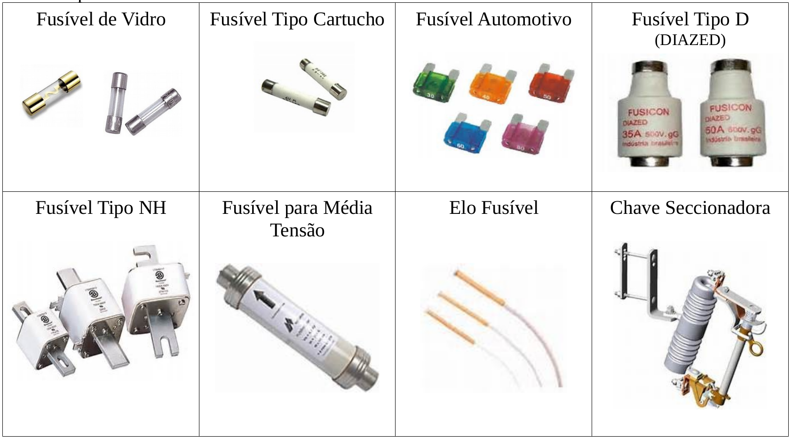
Fig. 2: Tipos de fusíveis conforme velocidade de atuação e aplicação.
Dimensionamento de um Fusível
O fusível deve atender simultaneamente a três critérios:
Não fundir na partida do motor: usando a curva tempo de fusão × corrente do fabricante e o tempo de aceleração do sistema, escolhe-se um fusível de ação retardada compatível;
Evitar envelhecimento prematuro: suportar pelo menos \(1{,}2 \cdot I_{\rm{n}}\) continuamente;
Proteger contatores e relés: o fusível não pode exceder o valor máximo admitido por esses componentes (tabela do fabricante).
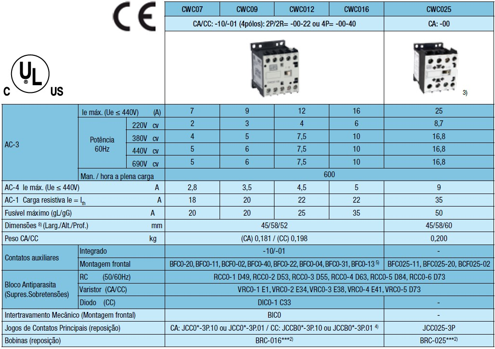
Fig. 3: Valor máximo de fusível para um contator.
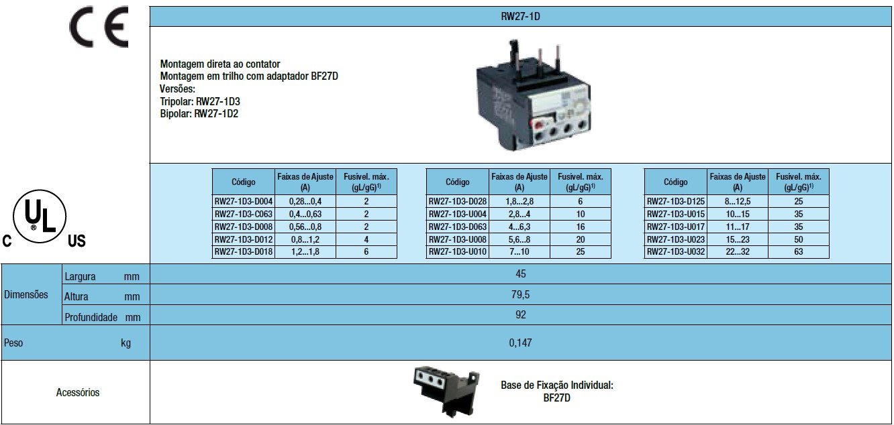
Fig. 4: Valor máximo de fusível para um relé térmico.
Exemplo: Dimensionamento de Fusível
Motor com \(I_{\rm{n}} = 30\) A. Pelo critério 2 (envelhecimento), o fusível deve suportar pelo menos \(1{,}2\,I_{\rm{n}}\). Escolha o fusível comercial imediatamente acima, dentre os valores padronizados \(\{16, 20, 25, 32, 35, 40, 50, 63\}\) A:
Código
In =30.0# A, corrente nominal do motorIfus_min =1.2* Inprintln("Criterio 2 (envelhecimento): fusivel > ", Ifus_min, " A")comerciais = [16, 20, 25, 32, 35, 40, 50, 63]fus_escolhido = comerciais[findfirst(x -> x >= Ifus_min, comerciais)]println("Fusivel comercial escolhido = ", fus_escolhido, " A")
Criterio 2 (envelhecimento): fusivel > 36.0 A
Fusivel comercial escolhido = 40 A
O critério 1 (curva de fusão × corrente) e o critério 3 (limite de contatores/relés) ainda precisam ser checados contra as curvas e tabelas específicas do fabricante escolhido — o critério do envelhecimento aqui só define um piso mínimo.
Relés de Proteção
Existem dois tipos principais: eletromagnéticos e térmicos.
Funciona por um eletroímã que move contatos quando a grandeza monitorada ultrapassa um limiar:
Relé de mínima tensão: atua quando a tensão cai abaixo do limiar mínimo — proteção contra subtensão;
Relé de máxima corrente: atua quando a corrente ultrapassa o valor ajustado — proteção contra sobrecorrente e curto-circuito.
Relé Térmico de Sobrecarga
Atua pela deformação de uma lâmina bimetálica aquecida pela corrente de carga — quanto maior a sobrecarga, mais rápido o disparo.
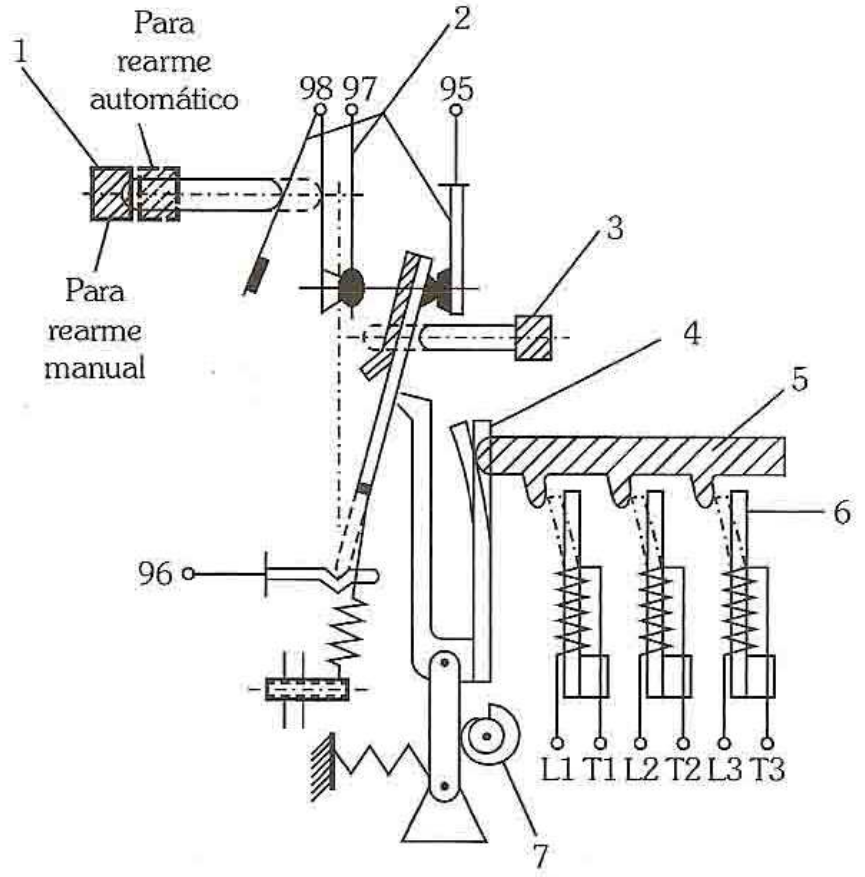
Fig. 6: Relé térmico: (1) botão de rearme, (2) contatos auxiliares, (3) botão de teste, (4) lâmina bimetálica.
Classes de Disparo e Rearme
Os relés suportam sobrecarga temporária na partida sem disparar indevidamente:
Classe 10: partidas com até 10 s;
Classe 20: partidas com até 20 s;
Classe 30: partidas com até 30 s.
Rearme automático: para contatores comandados por botão de impulso. Rearme manual: para contatores comandados por chave de posição fixa.
Dimensionamento do Relé Térmico
O relé deve conter, dentro de sua faixa de ajuste, a corrente nominal do motor:
\[
I_{\rm{r}} = 1{,}15\,I_{\rm{n}} \text{ até } 1{,}25\,I_{\rm{n}}
\]
Se \(\rm{F.S.} \geq 1{,}15\) ou elevação de temperatura de \(40\,°\rm{C}\): ajustar no limite superior;
Caso contrário: ajustar no limite inferior;
Se o motor trabalha abaixo da corrente nominal: ajustar para a corrente real de trabalho.
Exemplo: Faixa de Ajuste do Relé Térmico
Para o mesmo motor de \(I_{\rm{n}}=30\) A do exemplo do fusível:
Código
In =30.0Ir_min =1.15* InIr_max =1.25* Inprintln("Faixa de ajuste do rele termico: ", Ir_min, " a ", Ir_max, " A")
Faixa de ajuste do rele termico: 34.5 a 37.5 A
Disjuntores
São simultaneamente dispositivos de proteção (detectam falhas) e de manobra (interrompem a corrente via câmara de extinção de arco).
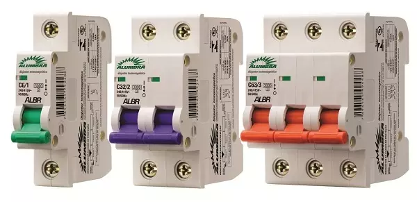
Fig. 7: Disjuntores conforme número de polos: monopolar, bipolar, tripolar e tetrapolar.
Correntes típicas de 2 a 70 A. Dois níveis de proteção: sobrecarga (disparador térmico/magnético) e curto-circuito (disparador eletromagnético).
Curvas de Disparo
A curva de disparo indica o tempo que o disjuntor suporta uma corrente acima da nominal antes de atuar:
Curva B: disparo instantâneo entre 3 e 5 vezes \(I_{\rm{n}}\) — lâmpadas, tomadas;
Curva C: disparo instantâneo entre 5 e 10 vezes \(I_{\rm{n}}\) — motores em geral;
Curva D: disparo instantâneo entre 10 e 20 vezes \(I_{\rm{n}}\) — motores com corrente de partida elevada.
Disjuntores Motores
Simbologia parecida com a do relé de proteção, com adição de uma chave seccionadora (função de manobra). Possuem knob de ajuste da proteção térmica.
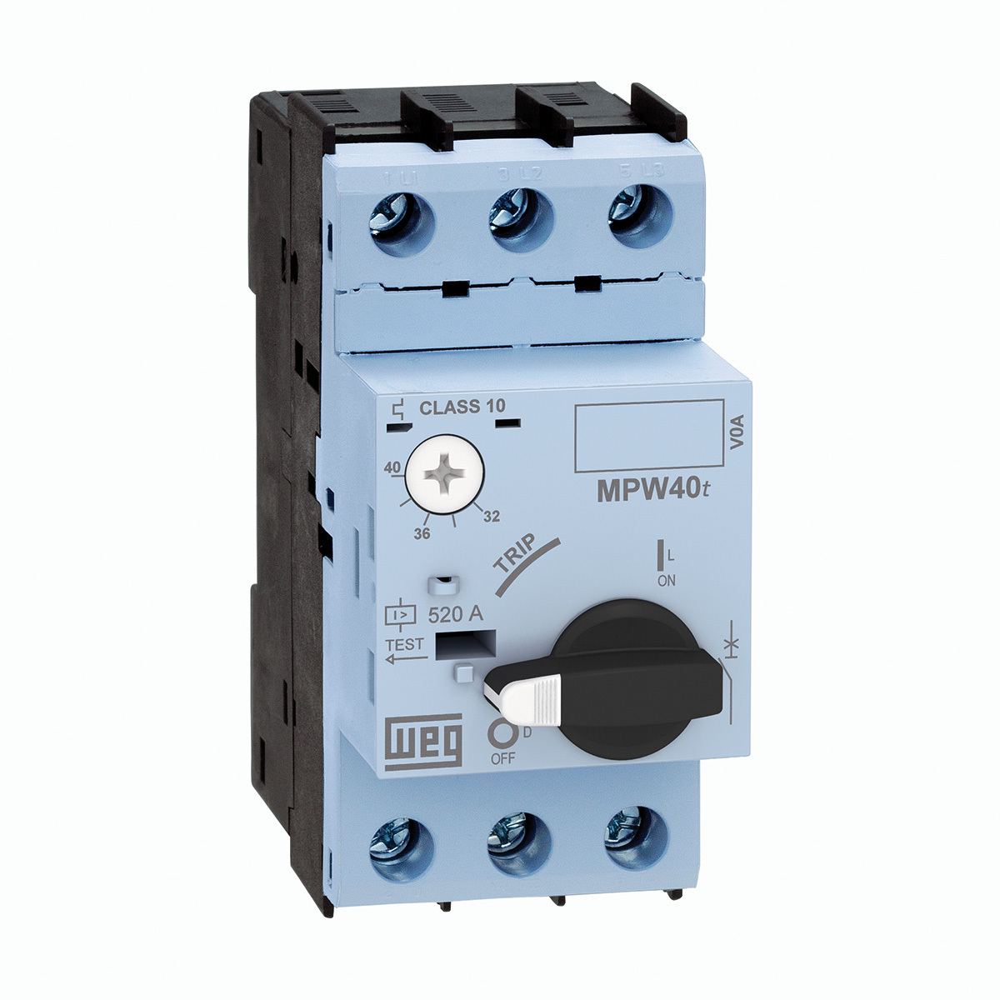
Fig. 8: Disjuntor motor com ajuste de corrente térmica.
Exemplo do Texto: Dimensionamento de Disjuntor
Dimensiona-se pela corrente nominal de funcionamento. Para um motor trifásico de 3 cv, 4 polos, 220 V, \(I_{\rm{n}}=8{,}18\) A, pode-se usar:
disjuntor padrão de 10 A, classe C ou D; ou
disjuntor motor WEG (MPW 16-3-U010), com ajuste térmico em 8,5 A; ou
disjuntor motor SIEMENS (3RV10 11-1JA10), com ajuste térmico em 8,5 A.
Código
In_motor =8.18# Aajuste_motor =8.5# A, disjuntor motor (WEG/Siemens)margem_motor = (ajuste_motor/In_motor -1) *100println("Margem do disjuntor motor (8,5 A) sobre In = ", round(margem_motor, digits=1), "%")disjuntor_padrao =10.0# Amargem_padrao = (disjuntor_padrao/In_motor -1) *100println("Margem do disjuntor padrao (10 A) sobre In = ", round(margem_padrao, digits=1), "%")
Margem do disjuntor motor (8,5 A) sobre In = 3.9%
Margem do disjuntor padrao (10 A) sobre In = 22.2%
O disjuntor motor ajustável tem margem bem mais enxuta (≈4%) sobre a corrente nominal real, enquanto o disjuntor padrão de valor fixo (10 A) sobra ≈22% — por isso disjuntores-motor com ajuste térmico fino são preferíveis para proteção de motores, reservando os disjuntores padrão para circuitos menos críticos.
Contatores
Elemento eletromecânico de manobra: uma bobina energizada cria um campo magnético que fecha (ou abre) os contatos principais, permitindo ou interrompendo a condução de energia para a carga.
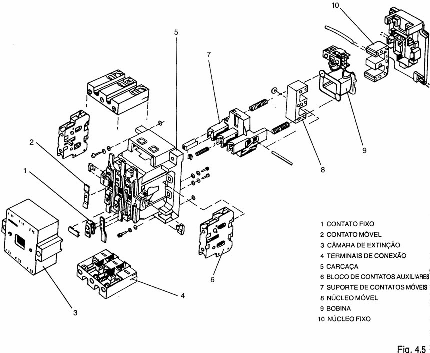
Fig. 9: Vista explodida e simbologia de um contator.
Classificação
Contatores tripolares: acionamento de cargas industriais (motores);
Contatores auxiliares: comando de pequenas cargas (sinalizadores, eletroválvulas).
A norma IEC 947 define categorias de emprego conforme o tipo de carga acionada:
AC-1: cargas com fator de potência \(> 0{,}95\);
AC-2: fechamento até \(2{,}5\,I_{\rm{n}}\);
AC-3: fechamento de \(5\) a \(7\,I_{\rm{n}}\), abertura com motor em regime — a mais comum para motores de indução;
AC-4: fechamento de \(5\) a \(7\,I_{\rm{n}}\), abertura com motor ainda em rotor bloqueado (partidas/reversões frequentes).
Dimensionamento do Contator
Critérios, na ordem: (1) categoria de emprego; (2) corrente da carga; (3) tensão e frequência; (4) frequência de manobras; (5) número de contatos auxiliares.
Exemplo do texto: especifique um contator para acionar um motor de 5 cv, 220 V / 13,8 A / 60 Hz, 4 polos, em partida direta e regime AC-3.
Código
In_motor =13.8# A, motor 5 cv / 220 V / 60 Hz# categoria AC-3: fechamento de 5 a 7x InIfechamento_min =5* In_motorIfechamento_max =7* In_motorprintln("Corrente de fechamento exigida (AC-3): ", Ifechamento_min, " a ", round(Ifechamento_max, digits=1), " A")println("-> o contator escolhido deve suportar esse pico de fechamento, alem da corrente nominal continua de ", In_motor, " A")
Corrente de fechamento exigida (AC-3): 69.0 a 96.6 A
-> o contator escolhido deve suportar esse pico de fechamento, alem da corrente nominal continua de 13.8 A
Circuitos de Comando e Potência
Todo circuito elétrico de proteção e manobra se divide em:
Circuito de comando (controle): contém a lógica de acionamento (botoeiras, bobinas, contatos auxiliares);
Circuito de potência (força): contém os mecanismos de comutação de energia e a carga.
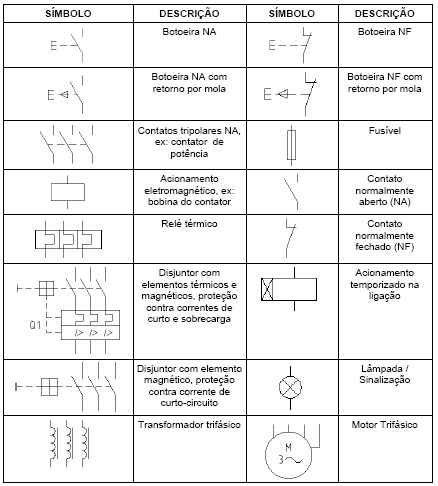
Fig. 10: Simbologia gráfica dos principais componentes.
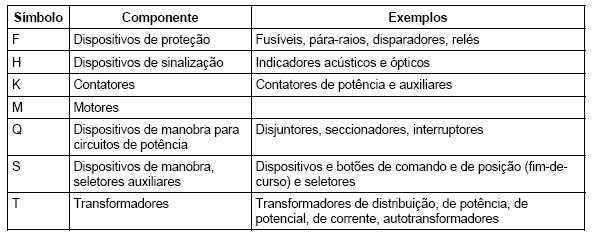
Fig. 11: Simbologia literal (designações usuais).
Simbologia Numérica
Contatos principais (circuito de potência): 1, 3, 5 → entrada (alimentação); 2, 4, 6 → saída (carga).
Chaves de comando: 1 e 2 → contato NF (1 entrada, 2 saída); 3 e 4 → contato NA (3 entrada, 4 saída).
Lógica usada para manter a bobina de um contator energizada mesmo após soltar o botão de partida, usando um contato auxiliar do próprio contator em paralelo com a botoeira NA:
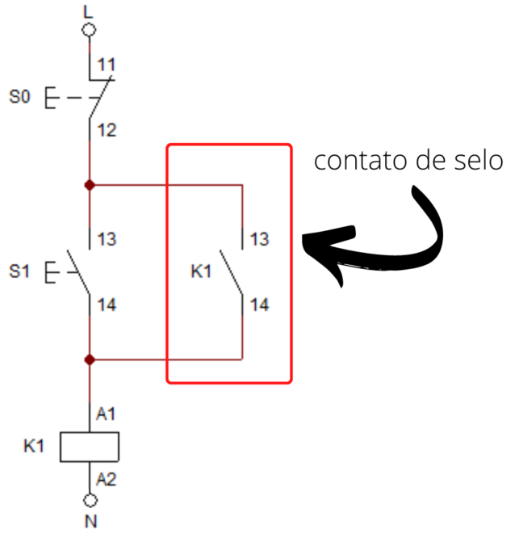
Fig. 12: Circuito de selo.
Intertravamento
Processo de ligação que garante que apenas um contator fique acionado por vez — essencial em circuitos de reversão, onde acionar os dois contatores simultaneamente causaria curto-circuito entre fases:
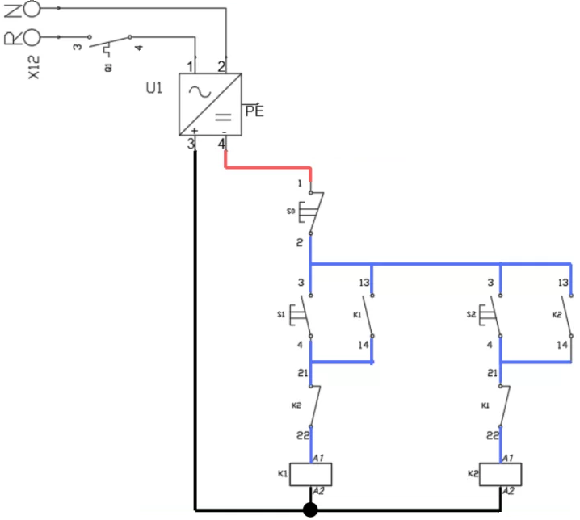
Fig. 13: Circuito de intertravamento.
Referências
TOLEDO JÚNIOR, J. A. Apostila de Comandos Elétricos (material complementar em formato .odt, não convertido para LaTeX no material original).
Exercícios
Exercício 1
Por que motores elétricos precisam de fusíveis de ação retardada, e não de ação rápida?
Porque a corrente de partida de um motor (tipicamente 6 a 9 vezes a nominal) é normal e transitória, não uma falha — um fusível de ação rápida interpretaria essa corrente elevada como uma falha e fundiria na primeira partida. O retardo permite que o fusível “espere” a corrente de partida passar, atuando apenas se a sobrecorrente persistir.
Exercício 2
Um motor tem \(I_{\rm{n}}=45\) A. Calcule a faixa de ajuste do relé térmico e o fusível mínimo pelo critério de envelhecimento (escolha entre os valores comerciais \(\{32, 40, 50, 63\}\) A).
Código
In =45.0Ir_min, Ir_max =1.15*In, 1.25*Inprintln("Faixa do rele: ", Ir_min, " a ", Ir_max, " A")Ifus_min =1.2*Incomerciais = [32, 40, 50, 63]fus = comerciais[findfirst(x -> x >= Ifus_min, comerciais)]println("Fusivel minimo (envelhecimento): ", Ifus_min, " A -> comercial: ", fus, " A")
Faixa do rele: 51.74999999999999 a 56.25 A
Fusivel minimo (envelhecimento): 54.0 A -> comercial: 63 A
Exercício 3
Qual a diferença entre a categoria de emprego AC-3 e AC-4 de um contator?
Ambas fecham com corrente de 5 a 7 vezes a nominal, mas diferem na abertura: AC-3 abre com o motor já em regime permanente (rotor girando, corrente próxima da nominal), enquanto AC-4 abre com o motor ainda em rotor bloqueado (corrente de partida) — típico de aplicações com partidas, reversões ou frenagens frequentes, que exigem contatos mais robustos.
Exercício 4
Um motor de 3 cv, 220 V, tem corrente nominal de 8,18 A. Se um disjuntor motor tiver ajuste térmico de 8,5 A, qual a margem percentual sobre a corrente nominal? Compare com um disjuntor padrão de 10 A.
Explique a função do circuito de intertravamento numa partida com reversão.
Numa partida com reversão, dois contatores (um para cada sentido de giro) estão ligados de forma que, se ambos fecharem ao mesmo tempo, ocorre um curto-circuito entre duas fases da rede. O intertravamento usa contatos auxiliares NF de cada contator na bobina do outro, garantindo que um só pode fechar se o outro estiver aberto — eliminando fisicamente a possibilidade de acionamento simultâneo.